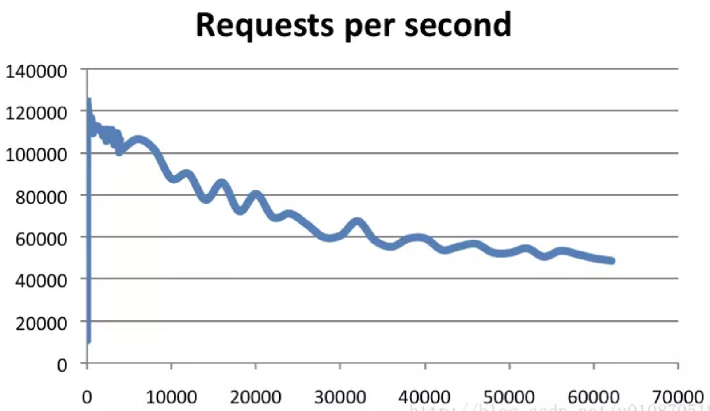
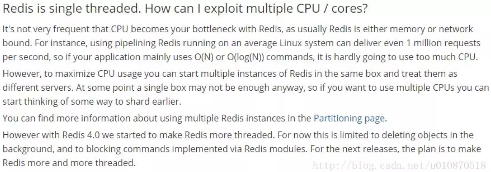
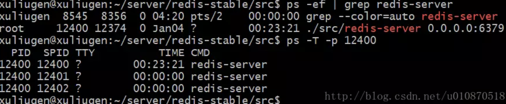
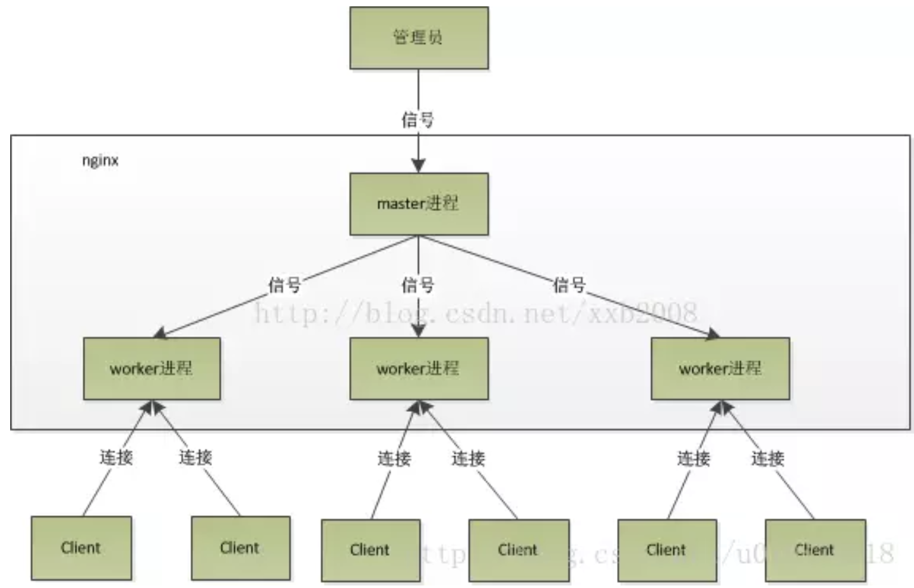

为什么说Redis是单线程或者Redis为什么这么快
Redis简介
Redis是一个开源的内存中的数据结构存储系统，它可以用作：数据库、缓存和消息中间件。
它支持多种类型的数据结构，如字符串（Strings），散列（Hash），列表（List），集合（Set），有序集合（Sorted Set或者是ZSet）与范围查询，Bitmaps，Hyperloglogs 和地理空间（Geospatial）索引半径查询。其中常见的数据结构类型有：String、List、Set、Hash、ZSet这5种。
Redis 内置了复制（Replication），LUA脚本（Lua scripting）， LRU驱动事件（LRU eviction），事务（Transactions） 和不同级别的磁盘持久化（Persistence），并通过 Redis哨兵（Sentinel）和自动分区（Cluster）提供高可用性（High Availability）。
Redis也提供了持久化的选项，这些选项可以让用户将自己的数据保存到磁盘上面进行存储。根据实际情况，可以每隔一定时间将数据集导出到磁盘（快照），或者追加到命令日志中（AOF只追加文件），他会在执行写命令时，将被执行的写命令复制到硬盘里面。您也可以关闭持久化功能，将Redis作为一个高效的网络的缓存数据功能使用。
Redis不使用表，他的数据库不会预定义或者强制去要求用户对Redis存储的不同数据进行关联。
数据库的工作模式按存储方式可分为：硬盘数据库和内存数据库。Redis 将数据储存在内存里面，读写数据的时候都不会受到硬盘 I/O 速度的限制，所以速度极快。
Redis到底有多快
Redis采用的是基于内存的采用的是单进程单线程模型的 KV 数据库，由C语言编写，官方提供的数据是可以达到100000+的QPS（每秒内查询次数）。这个数据不比采用单进程多线程的同样基于内存的 KV 数据库 Memcached 差！有兴趣的可以参考官方的基准程序测试：https://redis.io/topics/benchmarks

横轴是连接数，纵轴是QPS。此时，这张图反映了一个数量级，希望大家在面试的时候可以正确的描述出来，不要问你的时候，你回答的数量级相差甚远！
Redis为什么这么快
- 完全基于内存，绝大部分请求是纯粹的内存操作，非常快速。数据存在内存中，类似于HashMap，HashMap的优势就是查找和操作的时间复杂度都是O(1)；
- 数据结构简单，对数据操作也简单，Redis中的数据结构是专门进行设计的；
- 采用单线程，避免了不必要的上下文切换和竞争条件，也不存在多进程或者多线程导致的切换而消耗 CPU，不用去考虑各种锁的问题，不存在加锁释放锁操作，没有因为可能出现死锁而导致的性能消耗；
- 使用多路I/O复用模型，非阻塞IO；
- 使用底层模型不同，它们之间底层实现方式以及与客户端之间通信的应用协议不一样，Redis直接自己构建了VM 机制 ，因为一般的系统调用系统函数的话，会浪费一定的时间去移动和请求；
以上几点都比较好理解，下边我们针对多路 I/O 复用模型进行简单的探讨：
（1）多路 I/O 复用模型
多路I/O复用模型是利用 select、poll、epoll 可以同时监察多个流的 I/O 事件的能力，在空闲的时候，会把当前线程阻塞掉，当有一个或多个流有 I/O 事件时，就从阻塞态中唤醒，于是程序就会轮询一遍所有的流（epoll 是只轮询那些真正发出了事件的流），并且只依次顺序的处理就绪的流，这种做法就避免了大量的无用操作。
这里“多路”指的是多个网络连接，“复用”指的是复用同一个线程。采用多路 I/O 复用技术可以让单个线程高效的处理多个连接请求（尽量减少网络 IO 的时间消耗），且 Redis 在内存中操作数据的速度非常快，也就是说内存内的操作不会成为影响Redis性能的瓶颈，主要由以上几点造就了 Redis 具有很高的吞吐量。
那么为什么Redis是单线程的
我们首先要明白，上边的种种分析，都是为了营造一个Redis很快的氛围！官方FAQ表示，因为Redis是基于内存的操作，CPU不是Redis的瓶颈，Redis的瓶颈最有可能是机器内存的大小或者网络带宽。既然单线程容易实现，而且CPU不会成为瓶颈，那就顺理成章地采用单线程的方案了（毕竟采用多线程会有很多麻烦！）。

可以参考：https://redis.io/topics/faq
看到这里，你可能会气哭！本以为会有什么重大的技术要点才使得Redis使用单线程就可以这么快，没想到就是一句官方看似糊弄我们的回答！但是，我们已经可以很清楚的解释了为什么Redis这么快，并且正是由于在单线程模式的情况下已经很快了，就没有必要在使用多线程了！
但是，我们使用单线程的方式是无法发挥多核CPU 性能，不过我们可以通过在单机开多个Redis 实例来完善！
警告1：这里我们一直在强调的单线程，只是在处理我们的网络请求的时候只有一个线程来处理，一个正式的Redis Server运行的时候肯定是不止一个线程的，这里需要大家明确的注意一下！例如Redis进行持久化的时候会以子进程或者子线程的方式执行（具体是子线程还是子进程待读者深入研究）；例如我在测试服务器上查看Redis进程，然后找到该进程下的线程：

ps命令的“-T”参数表示显示线程（Show threads, possibly with SPID column.）“SID”栏表示线程ID，而“CMD”栏则显示了线程名称。
警告2：在上图中FAQ中的最后一段，表述了从Redis 4.0版本开始会支持多线程的方式，但是，只是在某一些操作上进行多线程的操作！所以该篇文章在以后的版本中是否还是单线程的方式需要读者考证！
扩展
以下也是你应该知道的几种模型，祝你的面试一臂之力！
- 单进程多线程模型：MySQL、Memcached、Oracle（Windows版本）；
- 多进程模型：Oracle（Linux版本）；
- Nginx有两类进程，一类称为Master进程(相当于管理进程)，另一类称为Worker进程（实际工作进程）。启动方式有两种：
（1）单进程启动：此时系统中仅有一个进程，该进程既充当Master进程的角色，也充当Worker进程的角色。
（2）多进程启动：此时系统有且仅有一个Master进程，至少有一个Worker进程工作。
（3）Master进程主要进行一些全局性的初始化工作和管理Worker的工作；事件处理是在Worker中进行的。
